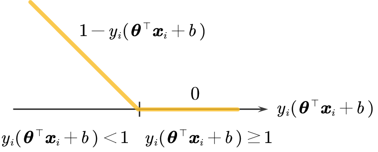
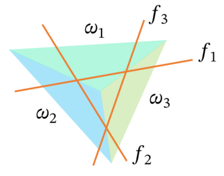

硬间隔与软间隔 硬间隔 支持向量机 回顾一下，经过前面的推导，我们已经将寻找最大间隔超平面的直观问题，转化为了一个精确的、可以求解的数学形式。我们最终得到了支持向量机的优化公式：
min θ ∈ R d , b ∈ R ∥ θ ∥ 2 2 s.t. y i ( θ ⊤ x i + b ) ≥ 1 , i = 1 , … , n \begin{aligned}
\min_{\boldsymbol{\theta} \in \mathbb{R}^d, b \in \mathbb{R}} \quad & \|\boldsymbol{\theta}\|_2^2 \\
\text{s.t.} \quad & y_i(\boldsymbol{\theta}^\top \boldsymbol{x}_i + b) \ge 1, \quad i=1, \dots, n
\end{aligned} θ ∈ R d , b ∈ R min s.t. ∥ θ ∥ 2 2 y i ( θ ⊤ x i + b ) ≥ 1 , i = 1 , … , n 这个公式所定义的模型，被称为 硬间隔支持向量机 (hard-margin support vector machine, SVM) 。
该如何求解它？从最优化理论的角度来看，这个问题具有非常好的数学性质：
目标函数 ： ∥ θ ∥ 2 2 \|\boldsymbol{\theta}\|_2^2 ∥ θ ∥ 2 2 是一个关于变量 θ \boldsymbol{\theta} θ 的 二次函数 (quadratic function) 。 约束条件 ： y i ( θ ⊤ x i + b ) ≥ 1 y_i(\boldsymbol{\theta}^\top \boldsymbol{x}_i + b) \ge 1 y i ( θ ⊤ x i + b ) ≥ 1 对于变量 θ \boldsymbol{\theta} θ 和 b b b 来说是 线性约束 (linear constraints) 。 凸性 ：这是一个 凸优化问题 ，意味着它没有局部最优解，只有一个全局最优解。 一个目标函数为二次函数、约束条件为线性的凸优化问题，在优化领域有一个标准的名字，叫做 二次规划 (Quadratic Programming, QP) 。
这是一个已经发展得非常成熟和完善的领域，存在许多稳定且高效的求解器（solvers）。因此，我们不需要从零开始发明算法来解决这个问题，而是可以直接应用这些标准的
硬间隔的特点 “硬间隔”这个词非常形象地描述了该模型的本质特性，其核心体现在它的约束条件上：
所有训练数据点都必须被正确分类 ：约束条件 y i ( θ ⊤ x i + b ) ≥ 1 y_i(\boldsymbol{\theta}^\top \boldsymbol{x}_i + b) \ge 1 y i ( θ ⊤ x i + b ) ≥ 1 隐含了 y i ( θ ⊤ x i + b ) > 0 y_i(\boldsymbol{\theta}^\top \boldsymbol{x}_i + b) > 0 y i ( θ ⊤ x i + b ) > 0 ，这意味着对于训练集中的 每一个样本 ，都绝不允许出现任何分类错误。
所有数据点都必须在间隔边界之外 ：不仅仅是分类正确，该约束还要求所有点的函数间隔最小为 不允许任何点进入间隔区域内部 。 我们可以将硬间隔 感知机分类器的一种进阶和优化 。
一个基本的感知机算法，其目标是找到 任意一个 能够将数据分开的超平面，即满足 y i ( θ ⊤ x i + b ) > 0 y_i(\boldsymbol{\theta}^\top \boldsymbol{x}_i + b) > 0 y i ( θ ⊤ x i + b ) > 0 即可。感知机必须在 线性可分 的情况下，才能停止迭代，同时，这样的超平面有无穷多种。 而硬间隔 拥有最大间隔 (largest margin) 的 唯一的最优解。 我们追求最大间隔，本质上是在寻找一个“最鲁棒”的分类器。这个目标体现在了目标函数 min ∥ θ ∥ 2 2 \min \|\boldsymbol{\theta}\|_2^2 min ∥ θ ∥ 2 2 中。 在机器学习领域，这个目标函数项被称为 正则化项 (regularization) ，具体来说是
最小化权重向量 θ \boldsymbol{\theta} θ 的 权重衰减 (weight decay) 。其作用是限制模型的复杂度，偏好于选择权重值更小的模型。一个更简单的模型通常具有更好的泛化能力，不容易在训练数据上产生过拟合。 因此，最大化间隔的目标与正则化的思想在此处完美统一： 一个间隔最大的分类器，正是一个正则化程度最好、最稳健的分类器 。
机器学习 - 鸢尾花书系列 机器学习 - 鸢尾花书系列 硬间隔 尽管硬间隔
它要求训练数据 必须是完全线性可分的 。在真实世界的数据中，这种情况很少见。数据中常常包含噪声或异常点，哪怕只有一个异常点，就可能导致数据线性不可分。在这种情况下，硬间隔 问题无解 。
如上图所示，数据中往往包含一些 噪声 或 异常点 ，导致数据集并非“完美”的线性可分。我们可以看到，大部分数据点可以被一条直线分开，但总有少数点“越界”了。
硬间隔的问题 ：对于这些越界的数据点，硬间隔 y i ( θ ⊤ x i + b ) ≥ 1 y_i(\boldsymbol{\theta}^\top \boldsymbol{x}_i + b) \ge 1 y i ( θ ⊤ x i + b ) ≥ 1 将 永远无法被满足 。例如，对于一个被错误分类的点， y i ( θ ⊤ x i + b ) y_i(\boldsymbol{\theta}^\top \boldsymbol{x}_i + b) y i ( θ ⊤ x i + b ) 的值是负数，不可能大于等于 导致的结果 ：在这种情况下，硬间隔 不可行 (infeasible) 的，因为它不存在任何一组 ( θ , b ) (\boldsymbol{\theta}, b) ( θ , b ) 能够同时满足所有的约束条件。算法将无法找到解。 解决方案 ：为了解决这个关键问题，我们需要对模型进行 “松弛” (Relaxation) 。我们不再坚持完美地对所有点进行分类，而是允许模型在一定程度上犯错，但要为这些错误付出相应的代价。 由于这个严重的局限性，我们引入了更为实用和广泛应用的 软间隔 ，它通过允许一定的分类错误来处理非线性可分的数据。
机器学习 - 鸢尾花书系列 机器学习 - 鸢尾花书系列
软间隔支持向量机 松弛变量 (Slack Variable) min θ ∈ R d , b ∈ R ∥ θ ∥ 2 2 s.t. y i ( θ ⊤ x i + b ) ≥ 1 , i = 1 , … , n \begin{aligned}
\min_{\boldsymbol{\theta} \in \mathbb{R}^d, b \in \mathbb{R}} \quad & \|\boldsymbol{\theta}\|_2^2 \\
\text{s.t.} \quad & y_i(\boldsymbol{\theta}^\top \boldsymbol{x}_i + b) \ge 1, \quad i=1, \dots, n
\end{aligned} θ ∈ R d , b ∈ R min s.t. ∥ θ ∥ 2 2 y i ( θ ⊤ x i + b ) ≥ 1 , i = 1 , … , n 这个问题的核心是，约束条件 y i ( θ ⊤ x i + b ) ≥ 1 y_i(\boldsymbol{\theta}^\top \boldsymbol{x}_i + b) \ge 1 y i ( θ ⊤ x i + b ) ≥ 1 必须对 所有 的数据点都成立。正如我们之前讨论的，这个要求过于严苛，在现实数据中几乎不可能满足。 为了解决这个问题，我们引入 松弛 (Relaxation) 的思想。我们不再要求 y i ( θ ⊤ x i + b ) ≥ 1 y_i(\boldsymbol{\theta}^\top \boldsymbol{x}_i + b) \ge 1 y i ( θ ⊤ x i + b ) ≥ 1 必须严格成立，而是允许某些点可以不满足这个约束。 为了量化“不满足的程度”，我们为 每一个 数据点 i i i 引入一个 松弛变量 (Slack Variable) ξ i \xi_i ξ i (读作 "ksi")。我们修改原来的约束条件为： y i ( θ ⊤ x i + b ) ≥ 1 − ξ i y_i(\boldsymbol{\theta}^\top \boldsymbol{x}_i + b) \ge 1 - \xi_i y i ( θ ⊤ x i + b ) ≥ 1 − ξ i 同时，我们要求 ξ i ≥ 0 \xi_i \ge 0 ξ i ≥ 0 。现在我们来理解 松弛变量 ξ i \xi_i ξ i 的含义 ： 当 ξ i = 0 \xi_i = 0 ξ i = 0 时 ：约束变回 y i ( θ ⊤ x i + b ) ≥ 1 y_i(\boldsymbol{\theta}^\top \boldsymbol{x}_i + b) \ge 1 y i ( θ ⊤ x i + b ) ≥ 1 。这说明第 i i i 个点完全满足硬间隔的条件。 当 0 < ξ i ≤ 1 0 < \xi_i \le 1 0 < ξ i ≤ 1 时 ：点 i i i 仍然被正确分类，但它进入了间隔区域内部。 当 ξ i > 1 \xi_i > 1 ξ i > 1 时 ：点 i i i 已经被错误分类了，它超出了决策边界（超平面）。 ξ i \xi_i ξ i 的值可以被看作是第 i i i 个数据点“犯规”的程度。 下图以负类的“松弛”为例，我们知道决策边界（实线）为 θ ⊤ x + b = 0 \boldsymbol{\theta}^\top \boldsymbol{x} + b = 0 θ ⊤ x + b = 0 ，在负类一侧的区域边界（虚线）为 θ ⊤ x + b = − 1 \boldsymbol{\theta}^\top \boldsymbol{x} + b = -1 θ ⊤ x + b = − 1 ，当 0 < ξ i ≤ 1 0 < \xi_i \le 1 0 < ξ i ≤ 1 ，点 i i i 穿过了区域边界，当 ξ i > 1 \xi_i > 1 ξ i > 1 ，点 i i i 穿过了决策边界。 
但我们不能无偿地允许“犯规”。模型每放松一点约束（即 ξ i \xi_i ξ i 的值变大），就必须在总的优化目标中付出相应的代价。 最自然的想法，就是将所有点的“犯规”总量 ∑ i = 1 n ξ i \sum_{i=1}^{n} \xi_i ∑ i = 1 n ξ i 加入到我们原来的目标函数中。这样，模型在优化的过程中，就会天生倾向于让 ξ i \xi_i ξ i 的值尽可能小。 于是，我们得到了软间隔 第一种（也是更经典的）表达形式 ：
min θ , b , ξ ∥ θ ∥ 2 2 + C ∑ i = 1 n ξ i s.t. y i ( θ ⊤ x i + b ) ≥ 1 − ξ i , ∀ i ξ i ≥ 0 , ∀ i \begin{aligned}
\min_{\boldsymbol{\theta}, b, \boldsymbol{\xi}} \quad & \|\boldsymbol{\theta}\|_2^2 + C \sum_{i=1}^{n} \xi_i \\
\text{s.t.} \quad & y_i(\boldsymbol{\theta}^\top \boldsymbol{x}_i + b) \ge 1 - \xi_i, \quad \forall i \\
& \xi_i \ge 0, \quad \forall i
\end{aligned} θ , b , ξ min s.t. ∥ θ ∥ 2 2 + C i = 1 ∑ n ξ i y i ( θ ⊤ x i + b ) ≥ 1 − ξ i , ∀ i ξ i ≥ 0 , ∀ i 这里的 C C C 是一个正的常数，它是一个超参数，作用与我们后面看到的 λ \lambda λ 类似，用于权衡“最大化间隔”和“最小化犯规程度”这两个目标。 合页损失 (Hinge Loss) 现在，让我们来仔细观察上面这个带有约束的优化问题。从约束条件 y i ( θ ⊤ x i + b ) ≥ 1 − ξ i y_i(\boldsymbol{\theta}^\top \boldsymbol{x}_i + b) \ge 1 - \xi_i y i ( θ ⊤ x i + b ) ≥ 1 − ξ i 我们可以变形得到： ξ i ≥ 1 − y i ( θ ⊤ x i + b ) \xi_i \ge 1 - y_i(\boldsymbol{\theta}^\top \boldsymbol{x}_i + b) ξ i ≥ 1 − y i ( θ ⊤ x i + b ) 结合另一个约束 ξ i ≥ 0 \xi_i \ge 0 ξ i ≥ 0 ，我们知道 ξ i \xi_i ξ i 必须同时满足这两个不等式： { ξ i ≥ 1 − y i ( θ ⊤ x i + b ) ξ i ≥ 0 \left\{\begin{array}{l}{\xi_i \ge 1 - y_i(\boldsymbol{\theta}^\top \boldsymbol{x}_i + b)}\\{\xi_i \ge 0}\end{array}\right. { ξ i ≥ 1 − y i ( θ ⊤ x i + b ) ξ i ≥ 0 因为在优化目标中，我们有一项是最小化 ∑ ξ i \sum \xi_i ∑ ξ i ，所以对于每一个 ξ i \xi_i ξ i ，算法会自动把它推向能够满足约束的最小值。一个数同时要大于等于 A A A 和大于等于 B B B ，那么它的最小值就是 max ( A , B ) \max(A, B) max ( A , B ) 。因此，在最优解中， ξ i \xi_i ξ i 的取值必然是： ξ i = max ( 0 , 1 − y i ( θ ⊤ x i + b ) ) \xi_i = \max(0, 1 - y_i(\boldsymbol{\theta}^\top \boldsymbol{x}_i + b)) ξ i = max ( 0 , 1 − y i ( θ ⊤ x i + b )) 这个表达式精确地量化了每个数据点 ( x i , y i ) (\boldsymbol{x}_i, y_i) ( x i , y i ) 对间隔的“违反程度”。
情况一：当 y i ( θ ⊤ x i + b ) ≥ 1 y_i(\boldsymbol{\theta}^\top \boldsymbol{x}_i + b) \ge 1 y i ( θ ⊤ x i + b ) ≥ 1 时 这意味着数据点 x i \boldsymbol{x}_i x i 不仅被正确分类，而且位于间隔边界之外。此时， 1 − y i ( θ ⊤ x i + b ) 1 - y_i(\boldsymbol{\theta}^\top \boldsymbol{x}_i + b) 1 − y i ( θ ⊤ x i + b ) 的值小于或等于 max ( 0 , … ) \max(0, \dots) max ( 0 , … ) 的结果为 0 。这表明，对于这些“表现良好”的点，我们不施加任何惩罚。 情况二：当 y i ( θ ⊤ x i + b ) < 1 y_i(\boldsymbol{\theta}^\top \boldsymbol{x}_i + b) < 1 y i ( θ ⊤ x i + b ) < 1 时 这意味着数据点 x i \boldsymbol{x}_i x i 违反了硬间隔的约束。这又可细分为两种子情况：
点在间隔内但分类正确 ( 0 ≤ y i ( θ ⊤ x i + b ) < 1 0 \le y_i(\boldsymbol{\theta}^\top \boldsymbol{x}_i + b) < 1 0 ≤ y i ( θ ⊤ x i + b ) < 1 )：点位于“区域”内部，但仍在正确的一侧。
点被错误分类 ( y i ( θ ⊤ x i + b ) < 0 y_i(\boldsymbol{\theta}^\top \boldsymbol{x}_i + b) < 0 y i ( θ ⊤ x i + b ) < 0 )：点跑到了“区域”的另一侧。 在这两种子情况下， 1 − y i ( θ ⊤ x i + b ) 1 - y_i(\boldsymbol{\theta}^\top \boldsymbol{x}_i + b) 1 − y i ( θ ⊤ x i + b ) 的值都大于 1 − y i ( θ ⊤ x i + b ) 1 - y_i(\boldsymbol{\theta}^\top \boldsymbol{x}_i + b) 1 − y i ( θ ⊤ x i + b ) 。这个值的大小，正比于该点对间隔约束的 违反程度 。点离它应该在的位置越远，损失就越大。 这个函数在机器学习中非常重要，因为它完美地捕捉了“间隔边界”的概念，所以人们给了它一个专门的名字： 合页损失 (Hinge Loss) 。
L = max ( 0 , 1 − z ) L=\max(0,1-z)
L = max ( 0 , 1 − z ) 当 z ≥ 1 z \ge 1 z ≥ 1 时（满足间隔），损失为 当 z < 1 z < 1 z < 1 时（违反间隔），损失随着违反程度线性增加。 它的函数图像（如下图所示）有一个在 z = 1 z=1 z = 1 处的拐点，形状酷似一个“合页”，因此得名。 软间隔 的目标函数 现在，我们就可以将表达式 ξ i = max ( 0 , 1 − y i ( θ ⊤ x i + b ) ) \xi_i = \max(0, 1 - y_i(\boldsymbol{\theta}^\top \boldsymbol{x}_i + b))
ξ i = max ( 0 , 1 − y i ( θ ⊤ x i + b )) 代回到我们带约束的优化目标中，从而将 ξ i \xi_i ξ i 和 相关约束 全部消除掉。 min θ , b , ξ ∥ θ ∥ 2 2 + C ∑ i = 1 n ξ i \min_{\boldsymbol{\theta}, b, \boldsymbol{\xi}} ~ \|\boldsymbol{\theta}\|_2^2 + C \sum_{i=1}^{n} \xi_i θ , b , ξ min ∥ θ ∥ 2 2 + C i = 1 ∑ n ξ i min θ , b ∥ θ ∥ 2 2 + C ∑ i = 1 n max ( 0 , 1 − y i ( θ ⊤ x i + b ) ) \min_{\boldsymbol{\theta}, b} ~ \|\boldsymbol{\theta}\|_2^2 + C \sum_{i=1}^{n} \max(0, 1 - y_i(\boldsymbol{\theta}^\top \boldsymbol{x}_i + b)) θ , b min ∥ θ ∥ 2 2 + C i = 1 ∑ n max ( 0 , 1 − y i ( θ ⊤ x i + b )) 接下来，为了让目标函数的值不会因为训练集样本数量 n n n 的变化而发生剧烈变化，我们对合页损失项求平均。原本使用常数 C C C 控制合页损失项的影响程度，改成使用 λ \lambda λ 控制 ∥ θ ∥ 2 2 \|\boldsymbol{\theta}\|_2^2 ∥ θ ∥ 2 2 的重要程度，从而与 min θ ∈ R d , b ∈ R λ ∥ θ ∥ 2 2 + 1 n ∑ i = 1 n max ( 0 , 1 − y i ( θ ⊤ x i + b ) ) \min_{\boldsymbol{\theta} \in \mathbb{R}^d, b \in \mathbb{R}} ~ \lambda \|\boldsymbol{\theta}\|_2^2+\frac{1}{n} \sum_{i=1}^{n} \max(0, 1 - y_i(\boldsymbol{\theta}^\top \boldsymbol{x}_i + b)) θ ∈ R d , b ∈ R min λ ∥ θ ∥ 2 2 + n 1 i = 1 ∑ n max ( 0 , 1 − y i ( θ ⊤ x i + b )) min θ ∈ R d , b ∈ R 1 n ∑ i = 1 n max ( 0 , 1 − y i ( θ ⊤ x i + b ) ) + λ ∥ θ ∥ 2 2 \min_{\boldsymbol{\theta} \in \mathbb{R}^d, b \in \mathbb{R}} ~ \frac{1}{n} \sum_{i=1}^{n} \max(0, 1 - y_i(\boldsymbol{\theta}^\top \boldsymbol{x}_i + b)) + \lambda \|\boldsymbol{\theta}\|_2^2 θ ∈ R d , b ∈ R min n 1 i = 1 ∑ n max ( 0 , 1 − y i ( θ ⊤ x i + b )) + λ ∥ θ ∥ 2 2
平均合页损失项： 1 n ∑ i = 1 n … \frac{1}{n} \sum_{i=1}^{n} \dots n 1 ∑ i = 1 n … 这是所有训练样本的平均合页损失。这个项的目标是让模型尽可能地拟合训练数据，即使得违反间隔约束的点尽可能少，且违反的程度尽可能小。
L2 λ ∥ θ ∥ 2 2 \lambda \|\boldsymbol{\theta}\|_2^2 λ ∥ θ ∥ 2 2 这和硬间隔 ∥ θ ∥ 2 2 \|\boldsymbol{\theta}\|_2^2 ∥ θ ∥ 2 2 ）。它使模型保持简单和稳健。 参数 λ > 0 \lambda > 0 λ > 0 是一个至关重要的 超参数 ，它负责调控上述两个目标之间的 权衡 (trade-off) ： 当 λ \lambda λ 值较大时 ：模型会更侧重于最小化正则化项 λ ∥ θ ∥ 2 2 \lambda \|\boldsymbol{\theta}\|_2^2 λ ∥ θ ∥ 2 2 。这意味着模型会优先选择一个更大的间隔，哪怕这样做的代价是牺牲一些点的分类准确性（即容忍更大的合页损失）。这会产生一个更简单、更“宽”的决策边界。 当 λ \lambda λ 值较小时 ：模型会更侧重于最小化经验风险项（平均合页损失）。这意味着模型会优先保证对训练数据的拟合精度，尽可能地将每个点都正确分类，即使这样做的代价是牺牲间隔的宽度（即允许 ∥ θ ∥ 2 2 \|\boldsymbol{\theta}\|_2^2 ∥ θ ∥ 2 2 变大）。这可能产生一个更复杂、更贴合训练数据的决策边界。 与硬间隔的联系 ：如果一个数据集本身就是线性可分的，那么我们可以通过选择一个足够小的 λ \lambda λ 值，使得模型极度重视损失项。为了让总损失为零，模型将被迫使所有点的合页损失都为零，即满足 y i ( θ ⊤ x i + b ) ≥ 1 y_i(\boldsymbol{\theta}^\top \boldsymbol{x}_i + b) \ge 1 y i ( θ ⊤ x i + b ) ≥ 1 。在这种情况下，软间隔 强大的泛化能力 ：软间隔 即使数据不是线性可分的，它依然能够学习到一个有意义的分类器 。它能够在“最大化间隔”和“最小化分类错误”这两个看似矛盾的目标之间找到一个最佳的平衡点，从而获得强大的泛化性能。这使得它成为一个非常实用和强大的分类算法。 机器学习 - 鸢尾花书系列 机器学习 - 鸢尾花书系列 求解软间隔支持向量机 软间隔 合页损失（Hinge Loss） ，其形式是：
max ( 0 , 1 − y i ( θ ⊤ x i + b ) ) \max(0, 1 - y_i(\boldsymbol{\theta}^\top \boldsymbol{x}_i + b)) max ( 0 , 1 − y i ( θ ⊤ x i + b ))
这个函数有一个关键问题： 它不是处处可微分的（not differentiable） 。
让我们来分析 f ( z ) = max ( 0 , 1 − z ) f(z) = \max(0, 1-z) f ( z ) = max ( 0 , 1 − z ) 这个函数。 当 z > 0 z > 0 z > 0 时， f ( z ) = 0 f(z) = 0 f ( z ) = 0 ，导数 f ′ ( z ) = 0 f'(z) = 0 f ′ ( z ) = 0 。 当 z < 0 z < 0 z < 0 时， f ( z ) = 1 − z f(z) = 1-z f ( z ) = 1 − z ，导数 f ′ ( z ) = − 1 f'(z) = -1 f ′ ( z ) = − 1 。 当 z = 0 z = 0 z = 0 时，函数在这一点上有一个尖锐的“拐点”（kink）。在这一点，左导数是-1，右导数是 对应到 1 − y i ( θ ⊤ x i + b ) = 0 1 - y_i(\boldsymbol{\theta}^\top \boldsymbol{x}_i + b) = 0 1 − y i ( θ ⊤ x i + b ) = 0 时，损失函数对 θ \boldsymbol{\theta} θ 和 b b b 的梯度（gradient）是未定义的。 次梯度法 由于我们熟悉的 梯度下降法（Gradient Descent） 依赖于在每一点计算梯度，而
对偶规划 (Dual Formulation) ：这是经典 LibSVM库就常使用坐标上升（Coordinate Descent/Ascent）来求解这个对偶问题。 次梯度法 (Subgradient Method) ：这是一种 直接在原始问题（primal problem）上 进行优化的方法，特别适用于处理这种“有拐点”的非光滑（non-smooth）但却是 凸（convex） 的函数。 次梯度 (Subgradient) 次梯度是梯度的推广，专门用于处理那些在某些点上不可导的凸函数。
回顾一下，对于一个 光滑的凸函数 ，在任意一点 θ \boldsymbol{\theta} θ 处的切线（或切超平面）都位于整个函数图像的下方。这条切线的斜率（或法向量）就是 梯度（gradient） ∇ L ( θ ) \nabla \mathcal{L}(\boldsymbol{\theta}) ∇ L ( θ ) 。 次梯度 ：对于一个 非光滑的凸函数 （如图中所示），在“拐点” θ \boldsymbol{\theta} θ 处，我们无法画出唯一的切线。但是，我们可以画出 一族 穿过该点、并且仍然位于整个函数图像下方的直线（或超平面）。 例如，图中 f ( x 1 ) + g 1 ( x − x 1 ) f(x_1) + g_1(x - x_1) f ( x 1 ) + g 1 ( x − x 1 ) 和 f ( x 1 ) + g 2 ( x − x 1 ) f(x_1) + g_2(x - x_1) f ( x 1 ) + g 2 ( x − x 1 ) 就是两条这样的“支撑”直线。 这些支撑直线的斜率（或法向量） 中的任何一个 ，都被称为函数 L \mathcal{L} L 在 θ \boldsymbol{\theta} θ 点的一个 次梯度（subgradient） 。
次微分 (Subdifferential) ∂ L ( θ ) \partial \mathcal{L}(\boldsymbol{\theta}) ∂ L ( θ ) ：在点 θ \boldsymbol{\theta} θ 处，所有次梯度的 集合 被称为次微分。 次梯度 s \boldsymbol{s} s ：一个向量 s \boldsymbol{s} s 是 L \mathcal{L} L 在 θ \boldsymbol{\theta} θ 处的一个 次梯度 ，如果它满足以下不等式： L ( w ) ≥ L ( θ ) + s ⊤ ( w − θ ) , ∀ w ∈ R d \mathcal{L}(\boldsymbol{w}) \ge \mathcal{L}(\boldsymbol{\theta}) + \boldsymbol{s}^\top (\boldsymbol{w} - \boldsymbol{\theta}), \quad \forall w \in \mathbb{R}^{d} L ( w ) ≥ L ( θ ) + s ⊤ ( w − θ ) , ∀ w ∈ R d 这个不等式的几何含义就是：以 s \boldsymbol{s} s 为法向量、穿过点 ( θ , L ( θ ) ) (\boldsymbol{\theta}, \mathcal{L}(\boldsymbol{\theta})) ( θ , L ( θ )) 的超平面（即 g ( w ) = L ( θ ) + s ⊤ ( w − θ ) g(\boldsymbol{w}) = \mathcal{L}(\boldsymbol{\theta}) + \boldsymbol{s}^\top (\boldsymbol{w} - \boldsymbol{\theta}) g ( w ) = L ( θ ) + s ⊤ ( w − θ ) ）必须位于函数 L ( w ) \mathcal{L}(\boldsymbol{w}) L ( w ) 图像的下方。 如果 L \mathcal{L} L 在 θ \boldsymbol{\theta} θ 处可导，那么次微分集合 ∂ L ( θ ) \partial \mathcal{L}(\boldsymbol{\theta}) ∂ L ( θ ) 中 只有一个 元素，就是梯度 ∇ L ( θ ) \nabla \mathcal{L}(\boldsymbol{\theta}) ∇ L ( θ ) ，即 ∂ L ( θ ) = ∇ L ( θ ) \partial \mathcal{L}(\boldsymbol{\theta})=\nabla \mathcal{L}(\boldsymbol{\theta}) ∂ L ( θ ) = ∇ L ( θ ) 。 如果 L \mathcal{L} L 在 θ \boldsymbol{\theta} θ 处不可导（是个拐点），那么 ∂ L ( θ ) \partial \mathcal{L}(\boldsymbol{\theta}) ∂ L ( θ ) 会包含 无穷多个 次梯度（例如，在一元函数中，它会是一个斜率的区间）。 次梯度法的更新公式 软间隔 的最终优化目标可以用 L ( θ ) \mathcal{L}(\boldsymbol{\theta}) L ( θ ) 写作： min θ ∈ R d , b ∈ R L ( θ ) : = 1 n ∑ i = 1 n max ( 0 , 1 − y i ( θ ⊤ x i + b ) ) ⏟ 经验铰链损失 (Empirical Hinge Loss) + λ ∥ θ ∥ 2 2 ⏟ L2正则化项 \min_{\boldsymbol{\theta} \in \mathbb{R}^d, b \in \mathbb{R}} \mathcal{L}(\boldsymbol{\theta}) := \underbrace{\frac{1}{n} \sum_{i=1}^n \max(0, 1 - y_i(\boldsymbol{\theta}^\top \boldsymbol{x}_i + b))}_{\text{经验铰链损失 (Empirical Hinge Loss)}} + \underbrace{\lambda\|\boldsymbol{\theta}\|_2^2}_{\text{L2正则化项}} θ ∈ R d , b ∈ R min L ( θ ) := 经验铰链损失 (Empirical Hinge Loss) n 1 i = 1 ∑ n max ( 0 , 1 − y i ( θ ⊤ x i + b )) + L2 正则化项 λ ∥ θ ∥ 2 2 这个函数是两个凸函数的和，因此它本身也是一个 凸函数 。 这保证了次梯度法可以收敛到全局最小值（虽然收敛速度可能不快，且对步长 μ k \mu_k μ k 的选择有要求）。 θ k + 1 = argmin θ ∈ Θ { l k ( θ ) = q k ( θ ) + 1 2 μ k ∥ θ − θ k ∥ 2 2 } \boldsymbol{\theta}_{k+1} = \text{argmin}_{\boldsymbol{\theta} \in \Theta} \left\{ l_k(\boldsymbol{\theta}) = q_k(\boldsymbol{\theta}) + \frac{1}{2\mu_k}\|\boldsymbol{\theta} - \boldsymbol{\theta}_k\|_2^2 \right\} θ k + 1 = argmin θ ∈ Θ { l k ( θ ) = q k ( θ ) + 2 μ k 1 ∥ θ − θ k ∥ 2 2 } θ k \boldsymbol{\theta}_k θ k 是当前的参数。 q k ( θ ) q_k(\boldsymbol{\theta}) q k ( θ ) 是对原目标函数 L ( θ ) \mathcal{L}(\boldsymbol{\theta}) L ( θ ) 在 θ k \boldsymbol{\theta}_k θ k 附近的一个“近似”。 1 2 μ k ∥ θ − θ k ∥ 2 2 \frac{1}{2\mu_k}\|\boldsymbol{\theta} - \boldsymbol{\theta}_k\|_2^2 2 μ k 1 ∥ θ − θ k ∥ 2 2 是一个 近端项 (proximal term) 。它的作用是“惩罚”新的 θ \boldsymbol{\theta} θ 离旧的 θ k \boldsymbol{\theta}_k θ k 太远，使得更新保持在 θ k \boldsymbol{\theta}_k θ k 附近的一个信任区域内。 关键在于我们如何选择近似函数 q k ( θ ) q_k(\boldsymbol{\theta}) q k ( θ ) 。当 q k ( θ ) q_k(\boldsymbol{\theta}) q k ( θ ) 是使用次梯度 s k \boldsymbol{s}_k s k 得到的 线性近似 时，这个通用框架就 退化 为 次梯度法 。 我们使用次梯度定义中的“支撑超平面”作为 线性近似 ： q k ( θ ) = L ( θ k ) + s k ⊤ ( θ − θ k ) q_k(\boldsymbol{\theta}) = \mathcal{L}(\boldsymbol{\theta}_k) + \boldsymbol{s}_k^\top (\boldsymbol{\theta} - \boldsymbol{\theta}_k) q k ( θ ) = L ( θ k ) + s k ⊤ ( θ − θ k ) （这里 s k \boldsymbol{s}_k s k 是从 ∂ L ( θ k ) \partial \mathcal{L}(\boldsymbol{\theta}_k) ∂ L ( θ k ) 中 任选一个 的次梯度） 让我们把这个 q k ( θ ) q_k(\boldsymbol{\theta}) q k ( θ ) 代入上面的 argmin表达式中： θ k + 1 = argmin θ { L ( θ k ) + s k ⊤ ( θ − θ k ) + 1 2 μ k ∥ θ − θ k ∥ 2 2 } \boldsymbol{\theta}_{k+1} = \text{argmin}_{\boldsymbol{\theta}} \left\{ \mathcal{L}(\boldsymbol{\theta}_k) + \boldsymbol{s}_k^\top (\boldsymbol{\theta} - \boldsymbol{\theta}_k) + \frac{1}{2\mu_k}\|\boldsymbol{\theta} - \boldsymbol{\theta}_k\|_2^2 \right\} θ k + 1 = argmin θ { L ( θ k ) + s k ⊤ ( θ − θ k ) + 2 μ k 1 ∥ θ − θ k ∥ 2 2 } 这是一个无约束的凸优化问题。为了找到最小值，我们对 θ \boldsymbol{\theta} θ 求导（现在这个表达式是光滑可导的）并令其为 L ( θ k ) \mathcal{L}(\boldsymbol{\theta}_k) L ( θ k ) 和 s k ⊤ θ k \boldsymbol{s}_k^\top \boldsymbol{\theta}_k s k ⊤ θ k 是常数，可以忽略。 ∇ θ [ … ] = s k + 1 μ k ( θ − θ k ) = 0 \nabla_{\boldsymbol{\theta}} [\dots] = \boldsymbol{s}_k + \frac{1}{\mu_k}(\boldsymbol{\theta} - \boldsymbol{\theta}_k) = 0 ∇ θ [ … ] = s k + μ k 1 ( θ − θ k ) = 0 1 μ k ( θ − θ k ) = − s k θ − θ k = − μ k s k θ = θ k − μ k s k \begin{aligned}
\frac{1}{\mu_k}(\boldsymbol{\theta} - \boldsymbol{\theta}_k) &= -\boldsymbol{s}_k \\
\boldsymbol{\theta} - \boldsymbol{\theta}_k &= -\mu_k \boldsymbol{s}_k \\
\boldsymbol{\theta} &= \boldsymbol{\theta}_k - \mu_k \boldsymbol{s}_k
\end{aligned} μ k 1 ( θ − θ k ) θ − θ k θ = − s k = − μ k s k = θ k − μ k s k 这个解就是我们的 θ k + 1 \boldsymbol{\theta}_{k+1} θ k + 1 。 θ k + 1 = θ k − μ k s k , 其中 s k ∈ ∂ L ( θ k ) \boldsymbol{\theta}_{k+1} = \boldsymbol{\theta}_k - \mu_k \boldsymbol{s}_k, \quad \text{其中} \boldsymbol{s}_k \in \partial \mathcal{L}(\boldsymbol{\theta}_k) θ k + 1 = θ k − μ k s k , 其中 s k ∈ ∂ L ( θ k ) 这看起来和标准梯度下降法一模一样！唯一的区别在于 s k \boldsymbol{s}_k s k 是一个 次梯度 ，而不是梯度 ∇ L ( θ ) \nabla \mathcal{L}(\boldsymbol{\theta}) ∇ L ( θ ) 。 算法执行流程 ：
初始化 θ 0 \boldsymbol{\theta}_0 θ 0 。
在第 k k k 步：
计算目标函数 L \mathcal{L} L 在 θ k \boldsymbol{\theta}_k θ k 处的次微分 ∂ L ( θ k ) \partial \mathcal{L}(\boldsymbol{\theta}_k) ∂ L ( θ k ) 。
从这个集合中任选一个 次梯度 s k \boldsymbol{s}_k s k 。例如，对于 z = 1 z=1 z = 1 的拐点，我们可以选择斜率
选择一个步长 μ k \mu_k μ k 。
执行更新： θ k + 1 = θ k − μ k s k \boldsymbol{\theta}_{k+1} = \boldsymbol{\theta}_k - \mu_k \boldsymbol{s}_k θ k + 1 = θ k − μ k s k 。
重复直到收敛。 步长 (Stepsize) 的选择 我们在前面讨论了次梯度法是用于最小化 非光滑（non-smooth）凸函数 的有力工具，例如软间隔 Hinge Loss 。然而，它的一个特性给收敛带来了挑战。
我们来考虑一个最简单的一维凸函数，它在原点处不可导：
min θ L ( θ ) = ∣ θ ∣ \min_{\theta} \mathcal{L}(\theta) = |\theta| θ min L ( θ ) = ∣ θ ∣ 这个函数的最小值显然在 θ = 0 \theta = 0 θ = 0 处。 它的 次微分（subdifferential，即所有次梯度的集合） ∂ L ( θ ) \partial \mathcal{L}(\theta) ∂ L ( θ ) 是什么呢？ 当 θ > 0 \theta > 0 θ > 0 时，函数 L ( θ ) = θ \mathcal{L}(\theta) = \theta L ( θ ) = θ ，梯度（唯一的次梯度）是 1 1 1 。 当 θ < 0 \theta < 0 θ < 0 时，函数 L ( θ ) = − θ \mathcal{L}(\theta) = -\theta L ( θ ) = − θ ，梯度（唯一的次梯度）是 − 1 -1 − 1 。 当 θ = 0 \theta = 0 θ = 0 时（拐点处），任何在 [ − 1 , 1 ] [-1, 1] [ − 1 , 1 ] 区间内的斜率 s s s 都满足支撑超平面（直线）的定义，因此 ∂ L ( 0 ) = [ − 1 , 1 ] \partial \mathcal{L}(0) = [-1, 1] ∂ L ( 0 ) = [ − 1 , 1 ] 。 所以， ∂ L ( θ ) = sign ( θ ) \partial \mathcal{L}(\theta) = \text{sign}(\theta) ∂ L ( θ ) = sign ( θ ) 是一种简便的写法（严格来说， sign ( 0 ) \text{sign}(0) sign ( 0 ) 在这里代表了整个 [ − 1 , 1 ] [-1, 1] [ − 1 , 1 ] 区间）。
次梯度法的更新规则是 θ k + 1 = θ k − μ k s k \theta_{k+1} = \theta_k - \mu_k s_k θ k + 1 = θ k − μ k s k ，其中 s k s_k s k 是在 θ k \theta_k θ k 处的一个次梯度。 假设我们选择一个 固定的步长 μ k = 0.1 \mu_k = 0.1 μ k = 0.1 ，并从 θ 0 = 0.05 \theta^0 = 0.05 θ 0 = 0.05 开始。 第 k = 0 k=0 k = 0 ) : θ 0 = 0.05 \theta^0 = 0.05 θ 0 = 0.05 ( > 0) 选择次梯度 s 0 = sign ( 0.05 ) = 1 s_0 = \text{sign}(0.05) = 1 s 0 = sign ( 0.05 ) = 1 。 θ 1 = θ 0 − μ 0 s 0 = 0.05 − 0.1 × ( 1 ) = − 0.05 \theta^1 = \theta^0 - \mu_0 s_0 = 0.05 - 0.1 \times (1) = -0.05 θ 1 = θ 0 − μ 0 s 0 = 0.05 − 0.1 × ( 1 ) = − 0.05 。 第 k = 1 k=1 k = 1 ) : θ 1 = − 0.05 \theta^1 = -0.05 θ 1 = − 0.05 ( < 0) 选择次梯度 s 1 = sign ( − 0.05 ) = − 1 s_1 = \text{sign}(-0.05) = -1 s 1 = sign ( − 0.05 ) = − 1 。 θ 2 = θ 1 − μ 1 s 1 = − 0.05 − 0.1 × ( − 1 ) = − 0.05 + 0.1 = 0.05 \theta^2 = \theta^1 - \mu_1 s_1 = -0.05 - 0.1 \times (-1) = -0.05 + 0.1 = 0.05 θ 2 = θ 1 − μ 1 s 1 = − 0.05 − 0.1 × ( − 1 ) = − 0.05 + 0.1 = 0.05 。 第 k = 2 k=2 k = 2 ) : θ 2 = 0.05 \theta^2 = 0.05 θ 2 = 0.05 选择次梯度 s 2 = 1 s_2 = 1 s 2 = 1 。 θ 3 = 0.05 − 0.1 × ( 1 ) = − 0.05 \theta^3 = 0.05 - 0.1 \times (1) = -0.05 θ 3 = 0.05 − 0.1 × ( 1 ) = − 0.05 。 我们发现， θ \theta θ 的值在 0.05 0.05 0.05 和 − 0.05 -0.05 − 0.05 之间 永无休止地振荡 ，它永远不会收敛到最小值点 θ ∗ = 0 \theta^* = 0 θ ∗ = 0 。 次梯度法（Subgradient Method）之所以（在固定步长下）会振荡，原因在于 它的次梯度在最优解附近不会像光滑函数的梯度那样自动消失（vanish） 。 一个 永不为 （ ∥ s k ∥ = 1 \|s_k\|=1 ∥ s k ∥ = 1 ）和一个 永不为 （ μ k = 0.1 \mu_k=0.1 μ k = 0.1 ）相结合，导致了在最优解附近一个 永不为 （大小为 正因为次梯度 s k s_k s k 本身不会变小，我们 必须 在外部“强制”整个更新步骤变小。唯一的办法就是让步长 μ k \mu_k μ k 递减。 解决方案：递减步长 (Diminishing Stepsize)
为了解决这个振荡问题，我们必须使用一个随迭代次数 k k k 增加而 递减的步长 μ k \mu_k μ k 。 当 k k k 较小时， μ k \mu_k μ k 较大，我们可以快速向最优解靠近。 当 k k k 较大时， μ k \mu_k μ k 变小，这会“抑制”振荡的幅度，使得算法可以“稳定”在最优解上，最终收敛。 经验法则 (Rule of thumb) /常见的步长策略：为了保证收敛，步长 μ k \mu_k μ k 需要满足一些条件（例如 ∑ μ k = ∞ \sum \mu_k = \infty ∑ μ k = ∞ 且 ∑ μ k 2 < ∞ \sum \mu_k^2 < \infty ∑ μ k 2 < ∞ ）。满足这些条件的实用选择包括：
μ k = c k \mu_k = \frac{c}{k} μ k = k c ：这是一个经典的收敛步长选择。
μ k = c k \mu_k = \frac{c}{\sqrt{k}} μ k = k c ：这个步长递减得更慢，在实践中有时也（尤其是在随机设置中）被使用，它在早期能保持较大的步长，但收敛到精确最小值的理论保证与 c k \frac{c}{k} k c 不同。 对于常数 c > 0 c > 0 c > 0 ，它的选择通常需要通过实验来调整。 拓展： SVM 我们可以将刚刚讨论的 Hinge Loss 作为其核心部件。
我们以横轴 x x x 代表对一个数据点 ( x i , y i ) (\boldsymbol{x}_i, y_i) ( x i , y i ) 分类的正确性得分 ： x = y i ( θ ⊤ x i + b ) x=y_i(\boldsymbol{\theta}^\top \boldsymbol{x}_i + b) x = y i ( θ ⊤ x i + b ) max ( 0 , 1 − x ) \max(0,1-x)
max ( 0 , 1 − x ) 当 x > 1 x > 1 x > 1 时 ：分类完全正确，并且在间隔之外（安全区）。 当 0 < x ≤ 1 0 < x \le 1 0 < x ≤ 1 时 ：分类正确，但在间隔之内（不够安全）。 当 x ≤ 0 x \le 0 x ≤ 0 时 ：分类错误，跨过了决策边界。 纵轴 loss：代表对应不同的 x值，各个损失函数计算出的惩罚值（损失）。 Foundations of Machine Learning Foundations of Machine Learning
Zero-one Loss (0-1
公式 ： L ( x ) = 1 x ≤ 0 L(x) = \mathbf{1}_{x \le 0} L ( x ) = 1 x ≤ 0 (这是一个指示函数，当条件 x ≤ 0 x \le 0 x ≤ 0 满足时，函数值为 含义 ：这是最符合我们直觉的损失函数。它的逻辑非常简单： 只要分类错误 ( x ≤ 0 x \le 0 x ≤ 0 )，损失就等于 只要分类正确 ( x > 0 x > 0 x > 0 )，损失就等于 问题 ：尽管
不关心间隔 ：它对一个刚好分类正确的点（例如 x = 0.01 x=0.01 x = 0.01 ）和一个在安全区深处的点（ x = 100 x=100 x = 100 ）一视同仁，损失都是
难以优化 ：这个函数是非凸的，并且在几乎所有地方的梯度都为 公式 ： L ( x ) = max ( 0 , 1 − x ) L(x) = \max(0, 1-x) L ( x ) = max ( 0 , 1 − x ) 含义 ：这正是我们刚刚详细讨论过的 只有当分类得分 x ≥ 1 x \ge 1 x ≥ 1 时，损失才为 当 x < 1 x < 1 x < 1 时，损失会随着 x x x 的减小而 线性增加 。这意味着离安全区越远，惩罚就越大。 优点 : Hinge Loss “代理”或“替代品” (Surrogate Loss Function) 。
它是凸函数 ：这使得优化问题有很好的数学性质，可以被高效地求解。
鼓励间隔 ：通过要求 x ≥ 1 x \ge 1 x ≥ 1 才能让损失为
它是 ：从图中可以看出，蓝色的 Quadratic Hinge Loss (平方合页损失) -橙色曲线
公式 : L ( x ) = max ( 0 , 1 − x ) 2 L(x) = \max(0, 1-x)^2 L ( x ) = max ( 0 , 1 − x ) 2 含义 ：这是 它的基本思想和 x ≥ 1 x \ge 1 x ≥ 1 时损失才为 主要区别在于，当 x < 1 x < 1 x < 1 时，损失是 平方增长 的。 与 :
更平滑 ：平方项使得函数在 x = 1 x=1 x = 1 这个点的“拐角”处变得平滑（可导），这对于某些优化算法可能更有利。
对离群点更敏感 ：因为是平方惩罚，所以对于那些错得非常离谱的点（即 x是一个很大的负数），Quadratic Hinge Loss x = − 2 x=-2 x = − 2 时，Hinge Loss ( 1 − ( − 2 ) ) 2 = 9 (1-(-2))^2=9 ( 1 − ( − 2 ) ) 2 = 9 。 我们可以看出， 0-1 是我们的终极目标（计算分类错误数），但它在数学上难以优化。因此，我们寻找一个易于优化的 代理损失函数 。 Hinge Loss 是一个非常优秀的代理：它不仅是凸函数，而且其设计（要求 y z ≥ 1 yz \ge 1 yz ≥ 1 ）完美地体现了 Quadratic Hinge Loss 是另一个选择，它提供了更平滑的曲线和对大错误更严厉的惩罚，是标准 拓展：多分类问题的策略 我们从头推导的 本质上为二分类（binary classification） 设计的。这是因为整个 单独的超平面 θ ⊤ x + b = 0 \boldsymbol{\theta}^\top \boldsymbol{x} + b = 0 θ ⊤ x + b = 0 。 θ ⊤ x + b > 0 \boldsymbol{\theta}^\top \boldsymbol{x} + b > 0 θ ⊤ x + b > 0 （预测为 θ ⊤ x + b < 0 \boldsymbol{\theta}^\top \boldsymbol{x} + b < 0 θ ⊤ x + b < 0 （预测为-1 它无法像逻辑回归（Logistic Regression）那样，通过 K K K 个类别。 解决这个问题的最主流方法是： 将一个 K K K 分类问题分解为多个独立的二分类问题 ，然后用标准 将一个多分类问题（Multi-class Classification）分解为多个二分类问题，并不仅仅是 本身只支持二分类 的学习算法（例如标准的逻辑回归、感知机等）。
下面，我们来详细系统地梳理一下解决多分类问题的主流策略。
假设我们面临一个 K K K 分类问题，其中 K > 2 K > 2 K > 2 ，通过训练多个二分类器来“组合”出一个多分类的决策。 一对余 (One-vs-Rest, OvR) 训练 ：为 K K K 个类别中的每一个类别，都训练一个二分类器。总共需要训练 K K K 个分类器。 第 “类别 （作为正类）和 “所有其他类别” （即类别 第 “类别 （作为正类）和 “所有其他类别” （即类别 ... 第 K K K 个分类器：训练用于区分 “类别 （作为正类）和 “所有其他类别” （即类别 预测 ：当一个新样本 x \boldsymbol{x} x 到来时，它被同时输入到所有 K K K 个分类器中。 每个分类器 i i i 都会输出一个“置信度分数” f i ( x ) f_i(\boldsymbol{x}) f i ( x ) 。（对于 最终的决策是选择那个给出了 最高置信度分数 的类别。 Predicted Class = argmax i ∈ { 1 , … , K } f i ( x ) \text{Predicted Class} = \underset{i \in \{1, \dots, K\}}{\operatorname*{argmax}} f_i(\boldsymbol{x}) Predicted Class = i ∈ { 1 , … , K } argmax f i ( x ) 优点 ： 效率高 ，只需要训练 K K K 个分类器，计算量相较于 可解释性强 ，：每个分类器 f i f_i f i 的得分可以直接被看作是模型对“样本属于类别 i i i ”的信心。 缺点 ： 类别不平衡 (Class Imbalance) ：这是 i i i 个分类器时，正类样本（类别 i i i ）的数量可能远远少于负类样本（所有其他 K − 1 K-1 K − 1 个类别），这可能会对某些算法（如
一对一 (One-vs-One, OvO) 训练 ：为 K K K 个类别中每一对类别组合，都训练一个二分类器。 总共需要训练 ( K 2 ) = K ( K − 1 ) 2 \binom{K}{2} = \frac{K(K-1)}{2} ( 2 K ) = 2 K ( K − 1 ) 个分类器。 例如，如果有 4 × 3 2 = 6 \frac{4 \times 3}{2} = 6 2 4 × 3 = 6 个分类器： A vs. B；A vs. C；A vs. D；B vs. C；B vs. D；C vs. D
在训练“A vs. B”分类器时，所有 完全忽略 。 预测 ：当一个新样本 x \boldsymbol{x} x 到来时，它也被输入到所有 K ( K − 1 ) 2 \frac{K(K-1)}{2} 2 K ( K − 1 ) 个分类器中。 每个分类器 ( i , j ) (i, j) ( i , j ) 都会在“类别 i i i ”和“类别 j j j ”之间做出一个预测（投一票）。 所有分类器完成预测后，我们进行“投票统计”。 最终的决策是选择那个 获得票数最多 的类别。 优点 ：每个分类器都是在两个单独的类别上训练的， 数据是平衡的 。每个分类器只在总数据的一个子集上训练，因此单个模型的 训练速度可能很快 。对于像 缺点 ： 分类器数量多 ，当类别 K K K 很大时（例如 K = 100 K=100 K = 100 ），分类器的数量（ ≈ 5000 \approx 5000 ≈ 5000 ）会急剧增长（ O ( K 2 ) O(K^2) O ( K 2 ) 级别），导致训练和存储开销巨大。 预测速度慢 ，需要运行 K ( K − 1 ) 2 \frac{K(K-1)}{2} 2 K ( K − 1 ) 个分类器才能得到一个结果。